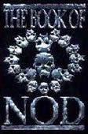
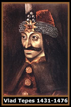

A palavra Vampiro surgiu
por volta do século XVIII. Tem origem no idioma sérvio
como Vampir, e sua forma básica é invariável
nos idiomas tcheco, russo, búlgaro e húngaro.
Lendas oriundas da Eslováquia e da Hungria,
estabelecem que a alma de um suicida deixava seu sepulcro durante
as noites para atacar os humanos, sugava o sangue e retornava
como morcego para o túmulo, antes do nascer do sol. Assim,
suas vítimas também tornavam-se vampiros após
a morte. As civilizações da Assíria e Babilônia,
também registram lendas sobre criaturas que sugavam sangue
de seres humanos e animais de grande porte. Outros mitos pregam
que as pessoas que morrem excomungadas, tornam-se mortos-vivos
vagando pela noite e alimentando-se de sangue, até que
os sacramentos da Igreja os libertem. Crianças não-batizadas,
e o sétimo filho de um sétimo filho também
se tornariam vampiros.
O
lendário Livro de Nod, originalmente concebido
por White-Wolf para o RPG Vampiro - A Máscara,
narra a origem dos vampiros. Além de A Crônica
das Sombras revelando os ensinamentos ocultos de Caim;
e A Crônica dos Segredos que revela os mistérios
vampíricos.
A tradição judaico-cristã,
prega a origem dos vampiros associada aos personagens bíblicos
Caim e Abel. Como é descrito, Caim foi amaldiçoado
por Deus pelo assassinato de seu irmão, Abel. Os
Anjos do Criador
foram até ele exigir que se redimisse. Orgulhoso,
recusou-se e acatou as punições impostas pelos
Anjos. A partir deste momento, Caim via-se condenado a solidão
e vida eterna, temendo o fogo e a luz, longe do convívio
dos mortais.
Caim foi anistiado por Deus após sofrer
durante uma era inteira. De volta ao mundo terreno dos homens,
fundou e fez-se rei da primeira cidade chamada Enoque. Mas ainda
temia a luz, o fogo, e a solidão da eternidade.
Passado-se muitos anos de prosperidade em Enoque,
Caim ainda sentia-se só devido a sua imortalidade. Abatido
e desmotivado, acabou por cometer outro grande erro: gerou três
filhos, que posteriormente geraram outros. Seguiram-se tempos
de paz até que chegou o grande dilúvio e lavou toda
a Terra. Na cidade de Enoque, sobreviveram apenas Caim, seus filhos,
netos e uns poucos mortais. Caim recusou-se a reconstruir a cidade,
pois considerava o dilúvio um castigo divino por ter subvertido
as leis naturais e gerado seres amaldiçoados como ele.
Assim, sua prole reergueu Enoque e assumiu o poder perante os
mortais.
Após um período de paz e prosperidade,
os sucessores de Caim passaram a travar batalhas entre si. A autoridade
dos governantes foi revogada, e tanto os mortais como os membros
da prole sentiam-se livres para fundar outras cidades e tornar
seu próprio rei. Dessa forma, os imortais ascendentes de
Caim, espalharam-se por toda a Terra.
Nesta versão da origem dos vampiros, vimos
que tudo teve início com uma maldição divina
atribuída a Caim, e depois herdada por sua prole. Porém,
torna-se muito difícil estabelecer um limite entre os fatos
e as lendas que circundam o mito vampírico, já que
boa parte destas informações confunde-se entre os
relatos e pesquisas históricas coerentes, com a ficção
dos filmes e RPG’s.
Na lenda de Caim, a conotação do
termo Vampiro ainda está ligada apenas ao sentido
de imortalidade, solidão e aversão a luz. A relação
estabelecida entre a longevidade e a sede pelo sangue (que caracteriza
a imagem mais comum dos vampiros), deve-se possivelmente, a personagens
lendários que viviam anos incalculáveis alimentando-se
de sangue humano, após terem firmado supostos pactos com
entidades malignas. Outras versões são encontradas
em diferentes culturas, e todas combinam fatos históricos
com a crendice regional. Portanto, a maior parte dos povos possui
uma entidade sobrenatural que alimenta-se de sangue, imortal e
considerada maldita. O mito do vampiro é um ponto comum
entre várias civilizações desde a Antigüidade.
Uma
das maiores referências do mito vampírico é
o sanguinário Vlad Tepes (ou Vlad III), que existiu
realmente no século XV na Transilvânia. Porém,
ele governou apenas a Valáquia, que era uma região
vizinha. Apesar da crueldade extrema com os inimigos, Vlad III
não possuía nenhuma ligação com os
vampiros. O termo Drácula (Dracul, originalmente
significa Dragão) foi herdado de seu pai, Vlad
II, que foi cavaleiro da Ordem do Dragão. Provavelmente,
a confusão se deu através da semelhança entre
os termos Drache, que era o título de nobreza
atribuído à Vlad II, e Drac que significa
Diabo.
A relação entre Vlad III e o mito
vampírico foi dada pelo escritor Bram Stocker. O autor
de Drácula
inspirou-se (provavelmente) nas atrocidades cometidas por Vlad
III, e as incorporou em seu personagem principal. A partir deste
momento, Vampiro e Drácula tornaram-se praticamente sinônimos
na literatura e nas crenças populares.
No Brasil também encontra-se mitos relacionados
aos vampiros e outros seres semelhantes. Neste caso, os registros
entrelaçam-se com o rico folclore das várias regiões
do país. Desde os centros urbanos, até as áreas
menos desenvolvidas do Brasil, é comum ouvir-se relatos
dos ataques sanguinários de criaturas que perambulam pelas
madrugadas. Na maioria das vezes, essas histórias assemelham-se
muito com as lendas européias.
Na mitologia indígena existe o Cupendipe,
que apesar de não possuir a sede de sangue caracterizada
pelos vampiros, possui asas de morcego, sai de sua gruta apenas
durante a noite e ataca as pessoas usando um machado.
No nordeste brasileiro conta-se a história
do Encourado. Um homem de hábitos noturnos, que
usa trajes de couro preto, exalando um odor de sangria. O Encourado
ataca animais e seres humanos para sugar-lhes o sangue. Prefere
as pessoas que não freqüentam igrejas. Porém,
os habitantes das cidades por onde o Encourado passa, oferecem-lhe
o sacrifício de criminosos, crianças ou animais
de pequeno porte.
Em Manaus, há relatos da presença
de uma vampira que atacava os moradores, sugando o sangue através
da jugular e deixando marcas de dentes em sua vítimas,
exatamente como é contada nos cinemas. Após os ataques,
a vampira corria em direção a um rio e transformava-se
em sereia, desaparecendo na água. A Vampira do Amazonas
possui a capacidade de transmutar-se e força física
descomunal.
Em maio de 1973 no município paulista de
Guarulhos, foi encontrado o corpo de um rapaz com as perfurações
características em seu pescoço. Esse é apenas
um exemplo da hipotética ação de vampiros
em zonas urbanas. Neste caso, os relatos transcendem a fronteira
da boataria e do folclore.
Por
Spectrum